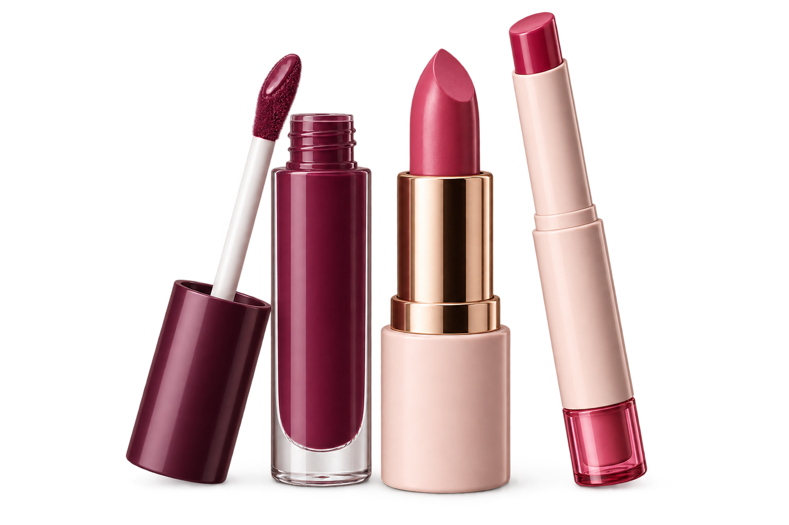

STEP 1
Processed on this device
Capture your reference

Capture first, then tap the exact colour You choose the pixel area. ShadeMatch will not guess from the centre.Camera is off
DETECTED REFERENCEMuted berry rose
- HEX
- #9B435C
- RGB
- 155, 67, 92
- LAB
- 41, 38, 7
Demo referenceUse the camera for your own reading
82%The picker reports a local 5 × 5 median around your chosen pixel to reduce compression noise. It represents the captured image; lighting, white balance, lip tone and finish can still change real-world appearance.